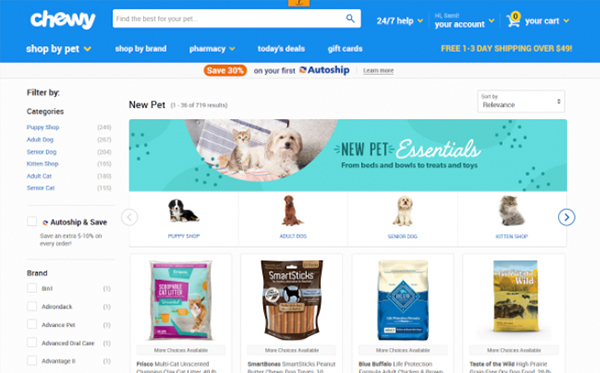
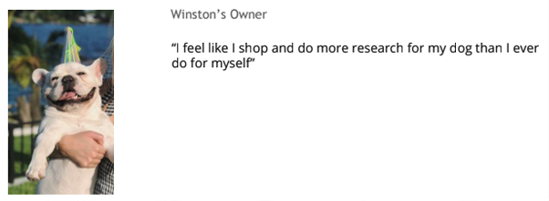

New Pet Parent Behaviors on Chewy.com
Background
In the midst of COVID-19, I was tasked with researching how COVID-19 was impacting new pet parents' purchasing behavior, specifically on Chewy.com and Chewy's New Pet Essentials page.
Questions that we were looking to answer were:
- What items do new dog owners deem as essential for new pet ownership?
- Could customers find those items on-site?
- What contributed to higher add to cart rates?
- What is the impact of navigation and heirarchy laid out on-site?
- What makes the customer feel like they had a successful shopping journey?

The Approach
Due to scope and timelines, I focused in on new puppy/dog owners. 10 participants were chosen to be interviewed from a wide a background of online shopping history. The cohort included customers with little online shopping history was crucial to understand the customer who has just gotten a dog but cannot shop in person due to COVID-19 retail restrictions. These interviews were conducted via Web Video applications (Zoom, Chime, Google Meets, etc) to capture customer facial expressions, as well as see their exact screen / shopping journey via screen share capabilities. A full research plan can be found here.
The Results
The most noteable findings from Chewy.com for new dog owners included:
- Prices [Positive sentiment] - 9 out of 10 customers mentioned positive price related aspects in their shopping journey, from discounts on individual products, Auto-ship savings, browsing the deals page, and more.
- Product information [Negative sentiment] - All 10 customers throughout the interview mentioned they would go off-site to validate / do further research on the products prior to purchase. One new dog owner said, “Help me understand the world that I’m entering.”
- Recommendations [Neutral sentiment] - All customers interacted and spent time on the “Customers also bought” and “Recommended products” for the add to cart page. 4 out of 10 customers explicitly mentioned that they like to look at these products both in the add to cart as well as the product detail page to ensure that they are getting the best item or not missing anything.

Full results can be found here.